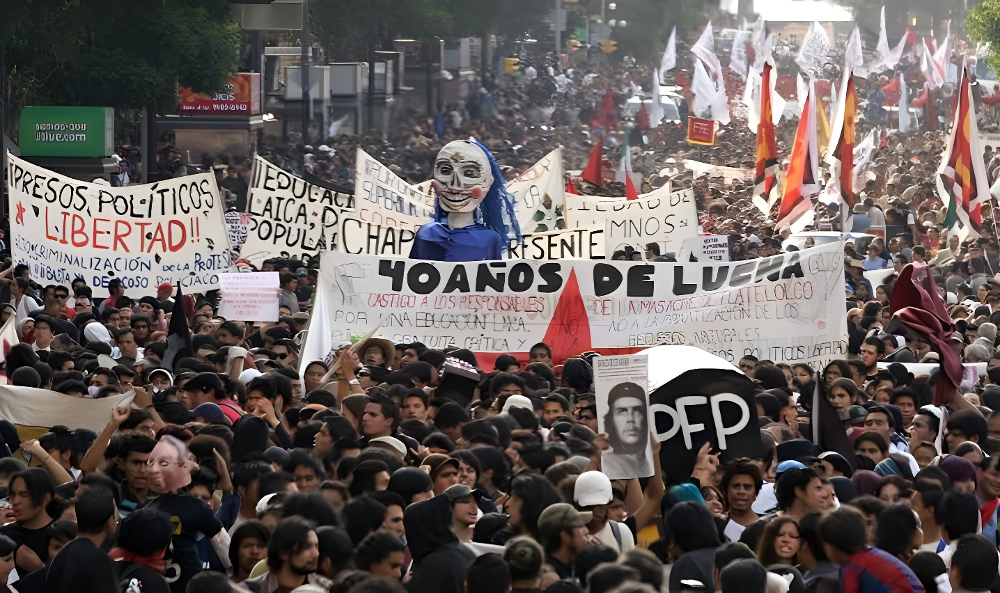

Le vendredi 2 octobre 2026, le Mexique a commémoré le 58e anniversaire du massacre d'étudiants de la place des Trois Cultures, à Tlatelolco. La présidente Claudia Sheinbaum a promis « plus jamais » de répression d'État contre un mouvement social et a reçu le Comité Eureka, tandis qu'une marche de Tlatelolco au Zócalo réclamait vérité et justice, dans un centre historique entouré de barrières.
Le 2 octobre 1968, sur la place des Trois Cultures, à Tlatelolco (Mexico), l'armée et le bataillon Olimpia ont tiré sur un meeting convoqué par le Conseil national de grève, sous la présidence de Gustavo Díaz Ordaz. Le rassemblement avait lieu quelques jours avant l'ouverture des Jeux olympiques de Mexico. Le nombre de morts, de blessés et de disparus n'a jamais été établi ; des organisations avancent plus de 300 victimes, et aucun responsable n'a été condamné à ce jour.
Lors de sa conférence de presse matinale, Claudia Sheinbaum a ouvert la journée par la formule « aujourd'hui c'est le 2 octobre, le 2 octobre ne s'oublie pas », rappelant « l'un des épisodes les plus douloureux de l'histoire du Mexique ». Elle a exprimé sa solidarité aux survivants et à leurs proches et réaffirmé : « plus jamais de répression de l'État contre un mouvement social ».
Elle a aussi rappelé qu'en 2024, au début de son mandat, l'État mexicain a reconnu officiellement ces violences comme un crime contre l'humanité, la responsabilité principale incombant à Díaz Ordaz. Le texte officiel prévoit un engagement de non-répétition et des excuses publiques aux victimes, aux familles et aux survivants.
« Ils ont voulu faire taire la voix de la jeunesse et ils ont échoué. »
— Clara Brugada, cheffe du gouvernement de Mexico, à Tlatelolco, 2 octobre 2026 (traduit de l'espagnol)58e anniversaire : message de la présidente, rencontre avec le Comité Eureka, marche de Tlatelolco au Zócalo.
Des barrières métalliques de plus de trois mètres sont installées autour du Palais national, de la cathédrale et de la Cour suprême.
L'État mexicain reconnaît le massacre comme crime contre l'humanité (texte publié au Journal officiel de la Fédération).
Rosario Ibarra de Piedra fonde le Comité Eureka pour les disparus de la répression politique.
Massacre de Tlatelolco, sous la présidence de Gustavo Díaz Ordaz.
La marche principale est partie à 16 h de la place des Trois Cultures vers le Zócalo. Elle a réuni surtout des étudiants de plusieurs universités, des normaliens ruraux, des organisations de solidarité et des syndicats ; la presse a évoqué environ 8 000 personnes réunies place des Trois Cultures avant le départ. Plus de 200 policiers de la Sécurité citoyenne ont encerclé des étudiants à la sortie du métro Tlatelolco avant la marche, selon le média Somos el Medio.
Depuis le 1er octobre, le centre historique était protégé par de hautes barrières métalliques. Le gouvernement de la capitale a présenté le dispositif comme préventif, destiné à protéger les bâtiments.
Le Comité 68 a exigé une condamnation à titre posthume des hauts responsables de l'époque, dont Díaz Ordaz et son ministre de l'Intérieur Luis Echeverría. De son côté, la présidente a reçu le Comité Eureka, fondé en 1977 par Rosario Ibarra de Piedra, pour faire le point sur les demandes de vérité, de justice et de localisation des personnes disparues pendant la « guerre sale », en promettant de poursuivre le dialogue avec les familles.
La reconnaissance officielle de 2024 a changé le discours de l'État sur 1968, pas encore le rapport de force avec la rue : le 2 octobre 2026, la présidente promettait « plus jamais » alors que le centre historique restait entouré de barrières. Pour le Comité 68 comme pour le Comité Eureka, l'enjeu demeure la vérité et la justice, c'est-à-dire des responsabilités établies et des disparus retrouvés.
El viernes 2 de octubre de 2026, México conmemoró el 58.º aniversario de la masacre de estudiantes en la Plaza de las Tres Culturas, en Tlatelolco. La presidenta Claudia Sheinbaum prometió que «nunca más» habrá represión del Estado contra un movimiento social y recibió al Comité Eureka, mientras una marcha de Tlatelolco al Zócalo exigía verdad y justicia, en un Centro Histórico rodeado de vallas.
El 2 de octubre de 1968, en la Plaza de las Tres Culturas de Tlatelolco (Ciudad de México), el Ejército y el Batallón Olimpia dispararon contra un mitin convocado por el Consejo Nacional de Huelga, bajo la presidencia de Gustavo Díaz Ordaz. La concentración tuvo lugar pocos días antes de la inauguración de los Juegos Olímpicos de México. El número de muertos, heridos y desaparecidos nunca se esclareció; organizaciones hablan de más de 300 víctimas y ningún responsable ha sido condenado hasta hoy.
En su conferencia matutina, Claudia Sheinbaum abrió la jornada con la fórmula «hoy es 2 de octubre, 2 de octubre no se olvida» y recordó «uno de los episodios más dolorosos de la historia de México». Expresó su solidaridad a los sobrevivientes y a sus familiares y reiteró: «nunca más la represión del Estado a un movimiento social».
Recordó también que en 2024, al inicio de su mandato, el Estado mexicano reconoció oficialmente esos hechos como crimen de lesa humanidad, con Díaz Ordaz como principal responsable. El texto oficial establece un compromiso de no repetición y una disculpa pública a las víctimas, los familiares y los sobrevivientes.
«Quisieron silenciar la voz de la juventud y fracasaron.»
— Clara Brugada, jefa de Gobierno de la Ciudad de México, en Tlatelolco, 2 de octubre de 202658.º aniversario: mensaje de la presidenta, reunión con el Comité Eureka y marcha de Tlatelolco al Zócalo.
Se instalan vallas metálicas de más de tres metros alrededor del Palacio Nacional, la Catedral y la Suprema Corte.
El Estado mexicano reconoce la masacre como crimen de lesa humanidad (texto publicado en el Diario Oficial de la Federación).
Rosario Ibarra de Piedra funda el Comité Eureka por los desaparecidos de la represión política.
Masacre de Tlatelolco, bajo la presidencia de Gustavo Díaz Ordaz.
La marcha principal salió a las 16 h de la Plaza de las Tres Culturas hacia el Zócalo. Reunió sobre todo a estudiantes de varias universidades, normalistas rurales, organizaciones solidarias y sindicatos; la prensa habló de unas 8 000 personas reunidas en la Plaza de las Tres Culturas antes de la salida. Más de 200 policías de la Secretaría de Seguridad Ciudadana encapsularon a estudiantes a la salida del Metro Tlatelolco antes de la marcha, según el medio Somos el Medio.
Desde el 1 de octubre el Centro Histórico estaba protegido con altas vallas metálicas. El gobierno capitalino presentó el dispositivo como preventivo, para proteger los inmuebles.
El Comité 68 exigió una condena póstuma de los altos funcionarios de la época, entre ellos Díaz Ordaz y su secretario de Gobernación, Luis Echeverría. Por su parte, la presidenta recibió al Comité Eureka, fundado en 1977 por Rosario Ibarra de Piedra, para dar seguimiento a las demandas de verdad, justicia y localización de las personas desaparecidas durante la «guerra sucia», y se comprometió a mantener el diálogo con las familias.
El reconocimiento oficial de 2024 cambió el discurso del Estado sobre 1968, pero todavía no la relación de fuerzas con la calle: el 2 de octubre de 2026, la presidenta prometía «nunca más» mientras el Centro Histórico seguía rodeado de vallas. Tanto para el Comité 68 como para el Comité Eureka, lo que sigue en juego es la verdad y la justicia, es decir, responsabilidades establecidas y desaparecidos localizados.